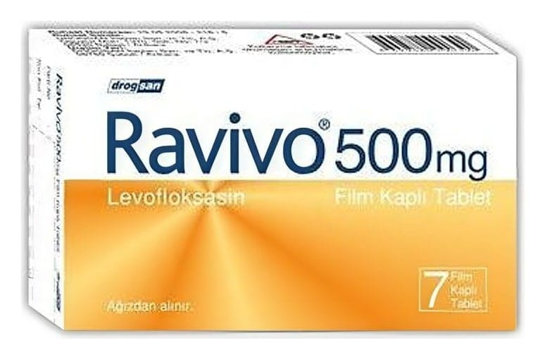

Ravivo 500 mg Film Kaplı Tablet, 7 Adet

Ne için kullanılır
KT · Bölüm 1Bakterilerin neden olduğu yüz kemiklerinin içindeki hava boşluklarının akut iltihabı (akut bakteriyel sinüzit) ve kronik bronş iltihabının akut alevlenmesinde alternatif tedavi seçeneklerinin varlığında ciddi yan etki riski nedeniyle kullanılmamalıdır. Buna ilave olarak idrar yolu enfeksiyonlarında antibiyogramla duyarlık kanıtlanması gerekmektedir.
RAVİVO ağızdan alınır. RAVİVO, beyaz film kaplı, çentikli, oblong (oval şeklinde) tabletler şeklindedir. İlacınızın bir kutusu içinde her biri 500 mg levofloksasin içeren 7 adet film kaplı tablet bulunur. Doz ayarlamasını kolaylaştırmak için tablet çentiklidir.
RAVİVO, bakterilere karşı etkili bir antibiyotiktir. Florokinolonlar adı verilen antibiyotik grubuna dâhildir. Bakterilerin büyümesini, çoğalmasını engeller ve bakterilerin yok olmasını sağlar.
RAVİVO etkin maddesi olan levofloksasine karşı duyarlı olan bakterilerin neden olduğu enfeksiyonların tedavisinde kullanılır.
Doktorunuz RAVİVO’yu sizde aşağıdaki durumlardan biri bulunduğu için reçete etmiş olabilir: • Bakterilerin neden olduğu yüz kemiklerinin içindeki hava boşluklarının akut iltihabı (sinüzit) • Kronik bronş iltihabının akut alevlenmesi • Toplumdan edinilmiş zatürre (pnömoni) • İdrar yolları ve böbrekte gelişen iltihap (piyelonefrit) dâhil, komplikasyonlu böbrek ve idrar yolu enfeksiyonları • Prostat iltihabı • Deri ve yumuşak doku enfeksiyonları: Apse (irin kesesi), selülit, furonkül, impetigo (derinin bulaşıcı, yüzeysel, mikrobik enfeksiyonu), piyoderma (irinli deri enfeksiyonu), yara enfeksiyonlarının neden olduğu komplikasyonsuz deri ve deri ekleri enfeksiyonları. • Hava ya k arışm ış şarbon mikr obuna maruz kalma